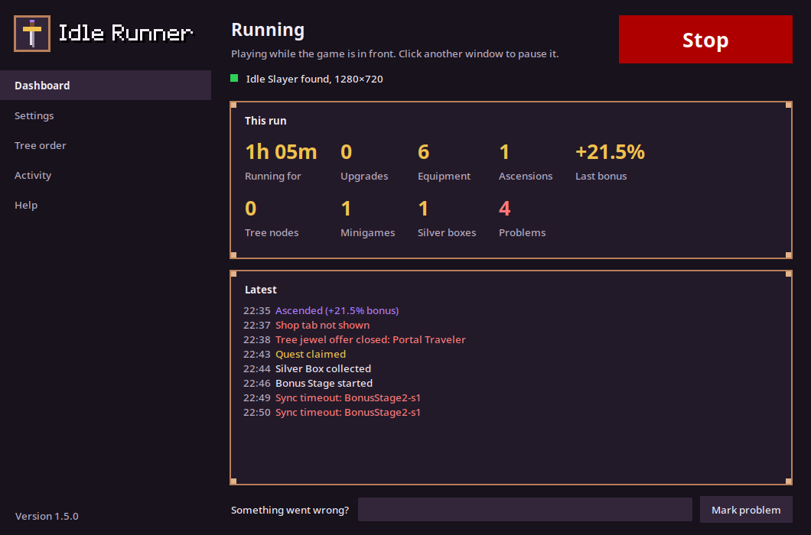
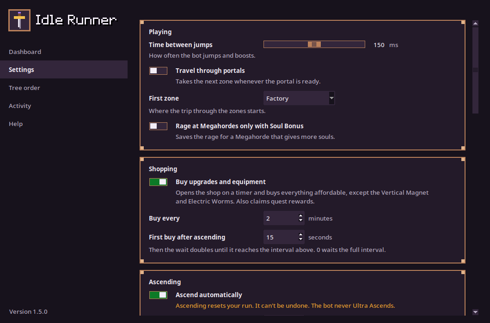

Press Start, click on the game, and leave it. Switch to another window to pause it, click the game to resume.
What it does
More than an auto clicker: it reads the screen, so it reacts to what the game shows.
- Runs
- Jumps and boosts nonstop, at the rate you choose.
- Collects
- Silver and orange boxes, quest rewards, two extra Daily Quests a day, and your minions back from their missions.
- Buys
- Upgrades and equipment every few minutes, and sends your minions on their missions.
- Travels
- Takes portals, cycling through the zones if you want.
- Rages
- Uses rage at Megahordes, optionally only with Soul Bonus.
- Plays minigames
- Chest hunts, Bonus Stages 2 and 3, Ascending Heights and the Victor boss fight.
- Ascends
- When the "+X% CpS bonus" reaches 20%, or every 30 minutes at the latest. You can change both, or turn it off.
- Spends SP, if you want
- Buys Ascension Tree nodes in your order after every ascension.


What it never does
- Read or change the game's memory, files, saves or network traffic. It only sees pixels and sends keys and clicks.
- Spend jewels. They cost real money, so it closes every jewel offer.
- Ultra Ascend.
- Spend your Slayer Points on the Ascension Tree unless you turn that on.
Get started
Set up the game
- Windowed at 1280x720, in English.
- Jump on the Up arrow, boost on the Right arrow.
- Custom cursor, portal dialogue and scientific notation off.
- Rounded bulk and hide locked quest rewards on.
- Don't buy the Vertical Magnet.
The bot reads these settings at the first start of each day and tells you if one is wrong.
Linux
- Download the
linux-x64.tar.gzand extract it. - Run
./install.shin theIdleRunnerfolder. It adds Idle Runner to your app menu. - Open Idle Runner and press Start.
Ubuntu 22.04, Fedora 36 or newer, with the Steam version of the game for Linux.
Windows
- Download the
windows-x64.zipand unzip it. - Double-click
IdleRunner.exeand press Start.
The app isn't code-signed, so Windows may say it protected your PC. Choose More info, then Run anyway.
Something not working? The README has the troubleshooting tips, and you can report a problem.